BarbecueNight.com Page 8
The Every Thursday Night Barbecue At Dick Flaharty's
The most recent Thursday, followed by the previous barbecues...
4 December 2008: An outrageous time was had by all.
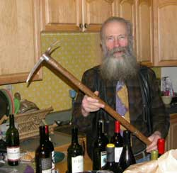
After great travels and the efforts of a gaggle of mountaineers, the official final handing off of the famous Mountaineering Club of South Africa historic ice axe, to the Alaskan Alpine Club assistant museum curator was performed with great hoopla, ceremonious dissertations and a few glasses of wine.
The Chief Curator is in the mountains, of course, which is why the club keeps the assistant curator around to do the actual museum work.
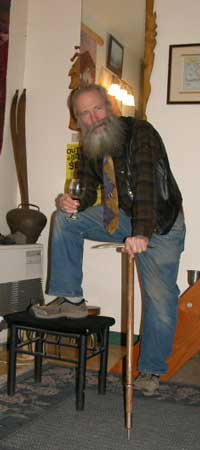
This ice axe was a veteran of many climbs in the Drakensberg Range of South Africa, during the 1950's and 60's. It was used by Robin Sandell on Tiquimani in Bolivia, and a dozen other Andean mountains during the 1963 MCSA Andean Expedition. The ice axe is made in Switzerland, with a Sass-Almagel stamp. It is also stamped with Robert Lawrie Ltd. London W.1. The shaft is embossed with MCSA. If those guys knew it was going to end up at the Alaska Mountaineering Museum, they would have brought it themselves and used it to climb more mountains.
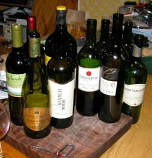
By the time we got done telling climbing stories about hills we should have climbed instead of hanging out drinking wine, most of the wine was gone.
Mention was made that John at Mountain Sports here in town donated a climbing book to the club library.
Marisa of WW Norton Books in the book district of right there downtown New York City, who donated the Igloo book mentioned with the link below, suggested that we offer more food porn photos, so the usual Copper River Red salmon from Chitina was fully presented this week. We gotta upgrade our food presentation at BBQnight. That is an assignment. More fancy stuff. Not so much of this old freezer to pan or grill routine. Maybe fluff it up with a little California Herb, a splash of brandy and a sprig of something.
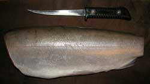 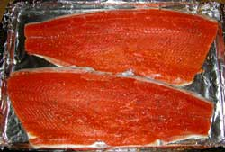 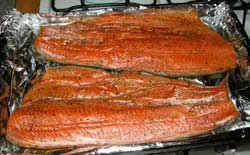
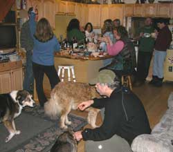
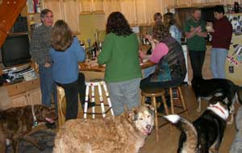
Snow machine trips are at full throttle. A report was presented on the Thanksgiving trip to the remote cabin north of the usual trail north of here up on high tundra. No laying around the cabin wishing they had not eaten so much turkey and other gourmet fixings. They were out on the trail burning the calories to stay warm, albeit on snow machines rather than holed up in a ridge snow cave eating glop and hoping the storm stops long enough to escape back down the mountain.
The varied other discussions retained their gentlemanly and gentlewomanly nature with no fist fights, shots fired or foul language, but an occasional phrase or sentence might have been considered threatening or just flat out grounds for indefinite incarceration and Gitmo torture if any of the DemocanRepublicrat Regime had showed up to hear them.
Oh, and savor the flavors of what you are eating today, because the feds cannot print more money or drop more bombs to solve the problems they created by printing too much worthless paper money and bombing too many people around the world, so tomorrow you may be eating only what the government sorts do not seize for themselves. So far Washington DC is on the same historic script and schedule as the Soviets and Romans. Enjoy the show.
20 November: It started out slow, got carried away, and ended late.
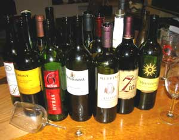
Profound philosophy went where philosophers fear any association. But philosophers stop where utility starts, so they are generally afraid of anything that actually happens.
Any time you are about to learn something of great value, offered free, there will be an interruption. No human holds the ability to successfully give or receive something for nothing, or more for less, by design. But if you are perceptive at that time, you can offer the great value of defending from the interruption.
During a dissertation on Asian cooking Suka the super dog went over and stood by the door to be the first to escape if anyone got out the wok. There was, however, ample moose, more moose, salmon and a full array of more complex dishes. Suka's understanding of the English language for all words associated with food is tolerated by the BBQnight folks because the other dogs cannot understand Suka.
Three of the wines were up to the standard we wished the other wines were up to. After the wine glass in the photo was used to emphasize a comment that was therefore immediately lost to the comments on the glass, the holder could no longer set his glass down.
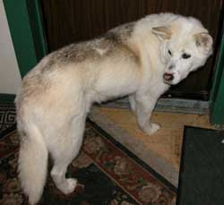
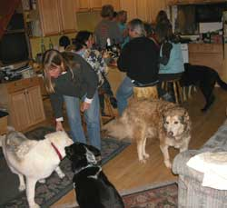
There being a portion of the folks who follow the teachings of sewing machines, there was discussion of how to replace an old Singer sewing machine motor with one of the modern replacement motors that do not have the correct bracket fittings. Duct tape was not considered to be blasphemous, but when we got to the idea of using a Makita sawsall for the needle mechanism, there was some guffawing and refilling of wine glasses.
Plans for the T-day snowmachine trip to the frozen farther north were refined. That brought forward the announcement of the new book about how to build igloos and snow caves, offered by http://www.WWNorton.com/npb/nparch/073215.html Well, we are supposed to be going to a cabin, but the paths in the far frozen north are oft fraught with peril. So if all goes awry, as all is oft want to do, and you have a good igloo book with you, you can properly build an igloo, and compliment your wisdom for having acquired the book, then make a cozy little fire with the book. Never take nothing what can't be used for something else.
That brought up the story of the Japanese movie crew who came to Alaska several years ago, to film a movie about a man passing on the old traditions of the far frozen north, to his son. The main guy was a famous Japanese outdoor adventure actor, The Man Who Skied Down Everest. Of course the film required an igloo. The film was almost declared a failure during production, because the film crew could not find anyone in Alaska who knew how to make an igloo. They went to several north coast Eskimo villages, and were politely laughed at. Igloos? We got nylon tents with gas stoves, and snow machines. Only white guy hobby igloo people living in cities build igloos. So back in Fairbanks the film crew was lamenting their problem to a local who told them to call the Alaskan Alpine Club. Local Alaska Range winter mountain climbers build igloos and snow caves because tents are too cold, and sometimes rip to shreds in Alaska Range winter winds. Shortly thereafter the film crew had a post-card-picture-perfect igloo. And they were laughing robustly stumbling through the crusty snow, carrying snow blocks, breaking some of them, while helping. However, their budget precluded another trip to the north coast, with the white guy climber, so we drove up out of town to Murphy Dome, barely above tree line, and built the igloo at a spot where, if the camera guy kept the camera low, pointing in one direction, no trees were in view across the wind-swept snow that looked just like the arctic coast. That is how the old traditions of the far frozen north are passed on.
Mention was made of the Big Bottle Party.
13 November 2008: Fer good grief sakes alive, mercy. They were almost off the end of the adventure discussion spectrum when I showed up. We promptly plunged over the edge laughing at the recent New York Times spoof, and went right into the local bank robbery. Might check in the morning to see if we survived.
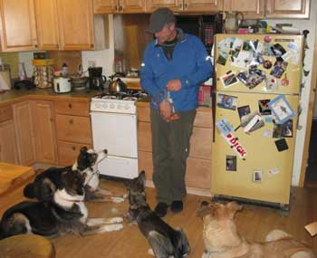
The dogs were not impressed with the stories, but had a close eye on the bag of dog snacks.So a couple of the North Pole folks, ah, that's right, North Pole Alaska, down the road a few miles from Fairbanks. Local meteorological thing. If it's cold in Fairbanks, it's colder in North Pole. Cold. People there are a little bit different. They gotta be thinking just to keep their minds from freezing. In contrast the government chaps there just let their brains freeze for the winter since there aint nothing to use them for in a government job.
Like I was saying, a couple of the locals who lost their retirement fund in the stock market crash decided to re-invest their lard barrel with some greenbacks from the local bank. So they logically called in a bomb threat to the local high school, drank another modicum of truly fine Single Malt Islay Scotch Whisky, fired up their snow machines, and drove to the bank, waving and smiling at every cop in Alaska descending on the high school. The Army, Air Force and Homeland Insecurity Gestapo were also enroute, of course.
What they withdrew from the local bank was transferred to a Swiss bank account before all the cops got to the high school. They bought hot new snow machines that afternoon and have not been seen since. The trail went into the water at Valdez, pointing toward Hawaii.
This aint no bullshit. This bomb threat reaction actually happened. When you hear about the dumbing down of America, the American government is the proof.
Granted, the police reaction is similar to that of the Columbine School adventure where the heavily armed police surrounded the school and protected the killers from any interruption while they methodically shot the students. What? Go into the school? We can't expect our police to endanger themselves. There were kids in there with guns.
Let me interrupt the web slave. Bomb threat to the High School. What would you do as a parent?
Let me guess. You would get your kid out of there, in any direction, right now.
High School. Bomb threat. Get the kids out of there, on their own in inherently separate directions. If the bomb is in the school, there will be fewer people around it. If a kid had the bomb, there would be fewer kids around him.
But what would Alaska Governor Sarah Palin's cadre of government cops do, as is the case with all DemocanRepublicrats?
Lock down the school. Keep everyone inside the school where the bomb was reported to be planted. If you are not laughing at the Americans, you might be one.
Every school teacher, and a few who showed up to collect their pay check, were assigned to each door and window to insure than no student escaped the potential blast zone.
Only two at a time were allowed go to the lavatory to, ah, well, if the bomb might be in the lavatory, somebody go look, then let kids go to the lavatory as they wish. What? Something might happen that would not happen if only two kids were in the lavatory that did not have a bomb? Yeah, they might laugh at the cops and school administrators. That cannot be allowed. Oh, if the bomb might be in the lavatory, we can't allow a cop to be endangered by going there to look, but a couple kids at a time are okay. What? Something else might happen? Let me see, the decision was already made to keep everyone in the school where the bomb might go off, leaving all the other potentials as absurd, so just as well invent any of a thousand reasons to protect the toilets from more than two students in a lavatory.
It was long and arduous duty keeping the kids in the school potential blast zone, with plenty of time for the students to write detailed notes and call people around the world to report the comedy.
Shall we mention the individual who was talking on his cell phone and leaned his elbow against the........... FIRE ALARM !
Now What? The Sarah Palin Omygosh Cops had everyone locked inside the potential bomb blast zone, but common sense and the law required that they get out of there because of the potential fire. Confusion-saturated minds froze in abject fear. If they ran out of the lock-down the Homeland Insecurity Gestapo surrounding the school might gun them down.
Well, I've gathered the eggs from the hen house on the farm, milked the cow, crawled through ice caves in glaciers, kayaked past killer whales, parachuted onto the real North Pole, been shot at by Vietnamese defending themselves, landed helicopters on Alaska Range ridges, listened to politicians lie twice with every word out of their mouth, sat in eagle nests with the eagles, stood down bears with eloquent rhetoric, and fly-fished for halibut, but I aint never heard no things like the BBQnight sorts said about that bomb threat and the next subjects to waft through the wine bottles.
Anyone else would have to show up with wine.
Oh, the school bomb threat introduced a revelation to one teacher. He noticed that he was watching his previous students show up to pick up their kids. What year is this?
Cool Hunters were analyzed. Kids are hired as Cool Hunters, by Madison Avenue suit-and-tie sorts, to look at various series of things, and pick out what is cool. Well, how did you think those flashing lights in shoe soles got popular? BBQnight sorts walk outside in the winter to find what is Cool. Cool Hunting season lasts half the year.
And Pattern Recognition skills were added to the pattern of the BBQnights. Those conspiracy theories? They are understood by minds that are adept at recognizing patterns in otherwise seemingly unrelated, complex arrays of human actions. The flawless pattern of the organizational manifestations of human fundamentals completely explains and can flawlessly predict all the obviously absurd government and other organizational actions. It is why individuals are always laughing at the cops driving away from the banks, toward the high school. Got a cop job? You can do better, learn more by doing so, and have more fun among more interesting people who treat other humans as their friends rather than feared enemies.
The prestigious Alaskan Alpine Club Museum Curator formally announced that the old South African ice axe that was used on South American climbing expeditions, and was sent via a climber from South Africa, through the US and Canada, to Anchorage Alaska, has been handed off from Charlie to Karl, and will shortly be transferred to Karen and John, to go through the Alaska Range to get to the club museum. It might get here before GoogleEarth cyber-porting replaces oil-based transportation.
It was heard as somebody was getting their coat on: "If you are taking the dogs, drive careful." What? There is more concern for the dogs than the driver? The dogs smiled.
The BBQnight Political Horse Racing Commission has suggested that running be eliminated from horse racing, and that spectators merely vote on which horse should win, and that politicians should be required to compete by running in a fair race at the horse arenas. Gambling allowed.
A Syrah was the best wine of the evening. Can't remember the winery. Came in a bottle.
That's it.
6 November 2008: Muktuk, moose, salmon, plant food, Norwegian chocolate, wine and the usual stuff.
Photos? The new ProMax compact flash card did not work. So the evening photos went to pixel hell. The muktuk photos and moose on the grill photos would have been good.
The muktuk was reasonably fresh and very good. By the time muktuk gets to the interior it is not as fresh as it was out on the ice or beach. It was well complimented with the Villa Pozzi Italian wine.
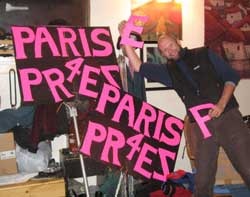
The local Paris Hilton for President Committee is awaiting the final electoral count, to begin strategy seminars for the 2012 election.
The snow machine adventure plans are well established for Thanksgiving out in the secret cabin to the north of Fairbanks, back up a valley farther than sane people take their snow machines, or the ones they borrowed.
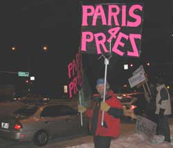
Fiona from England gave the full report on her current adventures. She will be returning to England with the Alaska report, including her preference of gun and rifle calibers, and which mountain climber organization might best advise Great Britain's staid old Alpine Club of crugemudgeons.
The movie review committee gave two thumbs up for the video, "Smiley Face".
The practical philosophy group concluded that flawless logic exists within the available data, quite logically, and is alterable by new data. This is predicated on the accurate exchange of available data, resolving all identified contradictions, usually facilitated by language, unknown to politicians and lawyers who perceive that their lies can be forever sustained with enough police, prisons, military legions and bombs.
All unfinished business shall remain unfinished, by definition.
30 October 2008: Pumpkin carving event for Halloween. Ah, not sure if we carved a pumpkin.
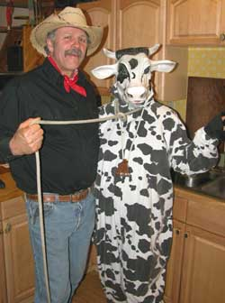
That is the Halloween couple. Everyone else came disguised as party animals.
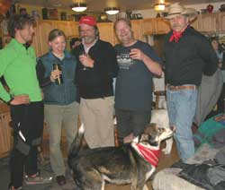
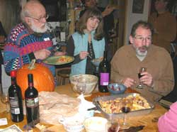
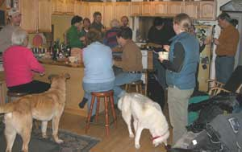
The wildlife biology sorts among the lot debated the ancestry of the official Halloween visitor from the woods. Coyote, fox, wolf, dog, chupicabra, lawyer or politician.
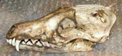
A lawyer has longer fangs, and venom glands.
There was discussion of the political election scheduled shortly after Halloween, quite appropriately. We had earlier assigned a colleague to infiltrate the local DemocanRepublicrat Central Election Committee, and present a timely dissertation to the BBQnight scholars, for our robust laughter. He reported the comments of a hired lawyer who bragged about writing one of the smear attack ads, stating that it was all just lies but it would be broadcast in the last few days of the campaign. "It's made up. It's all crap." "It exceeds the APOC limits. It's illegal, but we have the lawyers to just argue it ('until after the election when our fellow lawyers in APOC don't care anymore')."
That is the primary purpose of lawyers, and why they are appointed to judgeships by the DemocanRepublicrats. Their child's ability to fool so many fools with simpleton lies, and be paid lavishly with campaign contributions, is proven by the many Americans who still vote for the DemocanRepublicrat War Regime, much to the robust laughter of thinking people. Even the chupicabra was seen to snicker, unless he was a politician assigned to infiltrate BBQnight.com to report back to the dark side lawyers and politicians of the US War Regime.
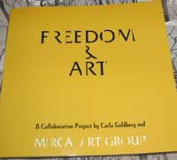
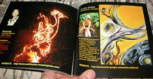
Dwight Eisenhower, past US president and WWII general, strongly warned against allowing the military industrial complex to gain control of the US government, because it would start war after war for its industry profits. That is why the DemocanRepublicrat War Regime in the pocket of the military industrial complex, with their dutifully compliant news journalists, never quote Dwight Eisenhower. They hire lawyers to fool fools with rhetorical threats of terrorists behind every Bush if we do not vote for the DemocanRepublicrat War Regime.
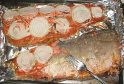
The Regime is supported by even the Chitina salmon who long for the day the humans will finally kill themselves off in wars so salmon can swim free again. We are not even sure about the onions.
The new grill selection committee met in the grill room with the grillmeisters. Selecting a grill that meets BBQnight standards aint no smuck operation. A full report will be presented, ah, sometime.
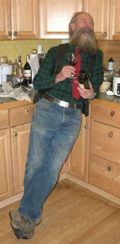
23 October 2008: Seems to be that they were just having fun the entire time. They made no effort to save the economy, end the presidential ego gratification wars, develop new energy sources, overthrow the government, reduce carbon footprints or even elect a vice president.
Don the artist presented a newly published art book that include him with an international selection of other artists and their work.
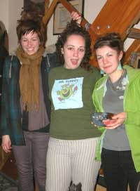
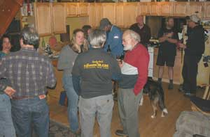
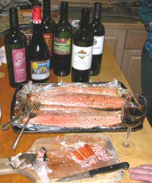
A common scientific demonstration of contained hot air was performed for idle amusement.
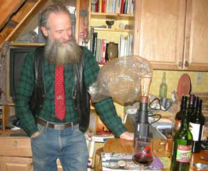
Ely's departure for a new adventure somewhere in metropolitan California was well toasted. We expect reports to make their way back up through the forest on occasion.
A couple snow machine adventures were planned, and then planned again. The winter snow condition has achieved full operational status. The localized aromatic snow machine atmospheric carbon footprint stratification has become detectable.
That and a couple old ice caving reports wafted among some of the more outrageous rhetorical illusions that effected grand laughter.
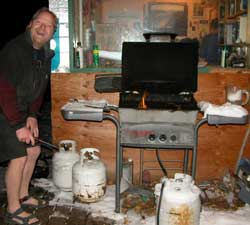
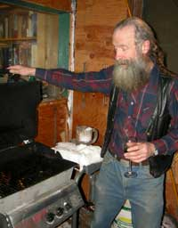
16 October 2008: The Grillmeister got carried away discussing great and weighty matters of serious consequence, while outside the grill was burning things with the grease from the chicken parts, much to the assistant grillmeister's amusement upon lifting the lid. Fortunately the salmon was on tinfoil this time. And the wine was ample for all contingencies and excuses. The Malbec was praised. The Italian wine that did not identify its grapes was certainly using Spanish grapes, and using them well.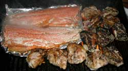
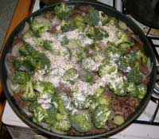
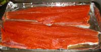
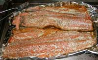
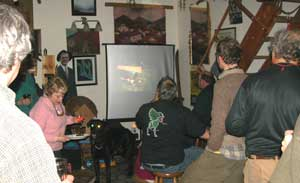
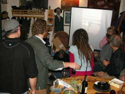
The slide show of kayaking to Little Diomede and Big Diomede Islands, including secret photos of unauthorized scenes on Big Diomede, progressed to some boxes of slides that went to other places in the world, as it is with these kayakers. Water tends to be connected to other water. Winter kayak camping in snow at high tide level out of Valdez was a bit boring for fellow Alaskans, but the Baja kayaking was cool. And the Alaska Range climbing photos may have related to the glaciers feeding the rivers that floated the kayaks in the other pictures, including the sometimes outrageous Nenana River. We also got to the Grand Canyon, Hawaii, Africa, South America and some genuinely not identifiable places on a planet that raised some questions about the guy who took the pictures. Well, we are all one with the world, you know, and maybe more, especially at BBQnight.com.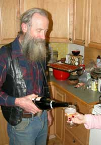
There was discussion of Guy Falks Day, including the engineering details of napalm in light bulbs, oxy-acetylene balloons, spud guns, full auto and PVC bombs. Just the usual sort of party chit-chat. Apparently a friend of a popular Milwaukee radio talk show host called the show one time a couple years ago, and described live on air the sort of events and discussions at a local Fairbanks party of the usual eclectics, in progress. Apparently there is a difference between normal lower 48 parties and Fairbanks parties. Doesn't everyone talk about overthrowing the stinking government at pretty much every party? The reason the wine is never the higher end stuff, and not enough, is because the stinking government takes everyone's money so its war mongering military industrial complex millionaires can buy, hoard and never share the better wine. The Democans always fund the Republicrat wars, and the Republicrats always fund the Democan wars, and fools are fooled.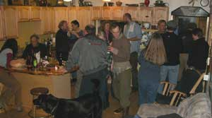
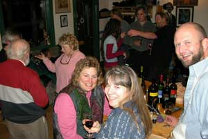
One of the adventure sorts brought one of those official story board books. He was madly scribbling and sketching the start of a home made video of one of our cool ideas that we have been intending to produce for the last 30 years. You will enjoy the movie. It goes through glacier moulins. We expect a Nobel Peace Prize, Pulitzer, or whatever prize they give for home made videos.
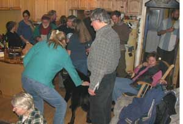
It was formally concluded again from discussion with one of our secret token government personnel at the party, who was in charge of "redoing" the agency office decor, that the only thing that government and large citizen organizations do is to "redo ______(fill in the blank)_____". Our resident expert on the organizational manifestations of human fundamentals verified that the only thing the National Rifle Association, International Union of Alpinist Associations, National Park Service, Bureau of Land Management and ALL the others ever really do is "reorganize", "restructure", "replan", "reorient", "reissue", "reinstitute", "review", "reevaluate" and otherwise "redo" what they "redid" when they "redid" things last time, because they produce nothing that anyone needs or wants, offering lucrative lies alone, so they are always failing, so they think they must "reorganize" to do what they do not know how to do with any organization because they will not "relearn" what they forgot from their basic grade school and social education in regard to common sense.That discussion noticeably confused the poor noticeable chap who was assigned to this party to keep track of who was saying what, and report that to his Homeland Security Gestapo Superior Officer. He got the assignment because his agency "reorganized", because none of his predecessors produced any "actionable intelligence" from their citizen spying assignments. The pitiable DemocanRepublicrat government sorts genuinely and sincerely believe that "the people" are the enemy, and must be spied on, identical to the old Soviet system. The government folks could read these words and not understand that they get their employees from "the people". They are their own enemy, and cannot figure it out, while the common people out here in the real world figured it out from the government bureaucracy incessantly attacking the rights, money, time and opportunities of the citizens, which constitutes the description of an enemy.
I took him aside and explained that no one at BBQnight.com wants to harm the pitiable government chaps because they are the best comedy on the rock, and the BBQnight sorts enjoy laughing a lot in life. He kept saying, "how did you know, how did you know." How does a salmon know that a shark is not a salmon, when they both swim in the ocean? How does a mouse know that a snake is not a mouse when they both live at ground level? The US feds are as clueless as the old Soviet KGB. They can only hire the type people who ask no questions of obvious government contradictions, and therefore display their sincere belief in laughably obvious government lies, because thinking people will not work for an obvious enemy of the common people including their own families. Government folks keep maliciously harassing the people with illogical, costly bureaucracy, and are clueless of the results. The more they try to act like common-sense humans, the more noticeable they become to common-sense humans. You have to learn common sense, not act like you learned it, and if you learn it, you learn why you would not get a government job to harass the people around you. Common sense.
They will probably send somebody new next week. Stop by for the show. Always a lot of laughter. Even our good friends in the government enjoy it because they are FAIRBANKS sorts first, and we both rag the lawyers (not nearly enough).
We are trying to get the web slave a government job so he can afford to show up with some good wine, at lease once.
9 October 2008: Started slow, picked up, the main speaker arrived, a dog fight started over the usual dominance standards, and things got into full energy expenditure.
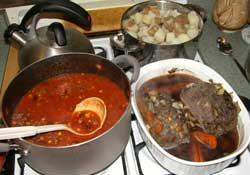 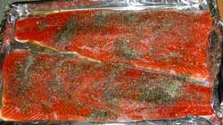 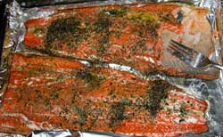
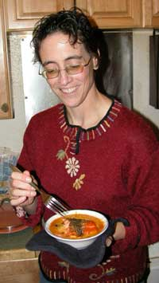
The Black Tie gourmet salmon bake was planned. Well, there was a little trip to Valdez for some charter boat salmon fishing this summer, and the expenses were added up for the three salmon that were caught. The salmon were therefore decreed to be gourmet salmon worthy of a black tie affair.
The oven-baked plain old Chitina Copper River red salmon for this evening was cooked with varied spices, including California herb, and rivaled the best that the Grillmeister has produced. Moose roast again. Moose chili and other food things.
A noted economist from Wall Street, or maybe Wail Street, spoke on the current George Bush attempt to revive the economy by escalating the war spending that scuttled the untenable myth that the US could bomb and spend its way to perpetual world dominance. Folks who are knowledgeable of how money functions in relation to the human mind are highly amused with the other countries who copied the US money model of increasingly printing worthless paper money, fooling fools while the insiders bought gold, until the entire world trade system went south, far south, leaving the gold holding banksters with private armies to protect them from what the French commoners did to the French government aristocracy who did the same thing a couple hundred years ago. In fact, said knowledgeable folks were noticed to be rolling on the floor, kicking and pounding, clutching their aching sides, gasping for breath, tears of howling laughter streaming from their eyes, while the dogs howled in apparent understanding. Between money and knowledge, knowledge offers more amusement while money offers more fear.
Not to worry, all polls show that the DemocanRepublicrat War Regime will do well on the diminishing yet adequate number of fools who are predicted to be voting for it again in November. The belief that proven failure will save us is the story of the war species.
However, the Grillmeister warned that the time window to get a new gas grill may soon be shuttered. He may be relegated to the old wood grill that was welded up from steel scraps on an Exxon Valdez oil spill barge. Tough times are rumored to be lurking in the boreal forest. We may be back to surviving on moose, salmon and garden products. We may have to accept local group lecturers for BBQnight.com. Wait, tough times must have arrived years ago.
Well, do the best you can, and stop by BarbecueNight with the best wine acquistion that the remnant of your stock portfolio can endure.
2 October 2008:
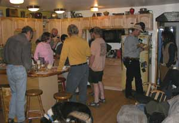
Things started at the bottom, with the television vice presidential candidate debate pouring forth the same trite old DemocanRepublicrat lies fooling only fools. But at the conclusion of the political lies BBQnight quickly elevated into the real world, and just kept on getting better, with a caveat that some lawyers showed up, but interesting lawyers this time.
Three nearly full crowd turnovers during the evening provided an eclectic experience for the normally eclectic regulars.
A visiting London corporate lawyer with an India knowledge base, currently working in Washington DC, illuminated an array of intriguing social concepts, as did his London colleague working in varied personnel systems consulting. We had never heard of Washington DC described in comparison with anything worse because we did not know anything worse existed. Apparently London is not the most working friendly venue. The mystique of London evaporated.
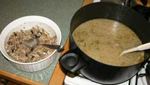
The BBQnight food was better than the usual magnificent. The wild harvested Minnesota wild rice dish with the fetta, olives, artichokes and secret ingredients was at the superlative end of the spectrum, that had people quietly sneaking repeated servings and feeling guilty that they might be taking more than their share. The meat and vegetable soup had people standing by the stove looking at the soup pot, then at the rice dish, then the soup pot, and getting another bowl to get more of each. There was plenty. The moose roast and Copper River red salmon were only accents to the succulent soup and rice flavors. Or something like that.
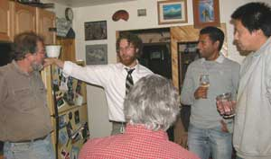
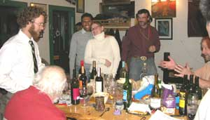
The international perspective on guns as personal defense devices transitioned into a discussion of the rarely recognized non-gun deadly weapons routinely carried by Russians, Alaskans and others of innovative nature. The government TSA security folks for airlines, remain clueless, a trait for which they were hired, routinely permitting deadly weapons on board, which is a good thing or the passengers would be defenseless against hijackers who can easily seize an airplane by commonly innovative means known even to children. This was contrasted with the social use of reasoning (British/American courts of Common Law) to resolve contradictions, which illuminated the current imperative for citizens to retain guns to defend from the American government thugs and their malicious lawyers and judges who HATE the Common Law because it deprives them of their personal power.
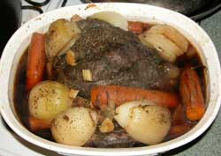
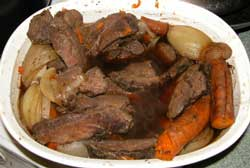
Well, if a nation is under the rule of written law, and provides public schools to render the common people literate, thus able to read the law to know the law to be able to obey the law, then the existence of government-licensed lawyers to verbally describe the law defines a government of fools, unless the lawyers who write the laws for the politicians, write the laws so they cannot be understood by the common people who therefore cannot know the law to obey the law, without paying financial tribute to insatiably greedy lawyers who defrauded literate people of rationally readable laws, again defining a government of fools if they wanted the common people to know the law to obey the law. What? You already know that the American DemocanRepublicrat War Regime is a government of malicious fools? Okay.
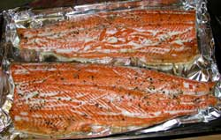
Yorkshire Pudding, of course with India spiced gravy, is that which makes the traditional nadir of British culinary endeavors into a pleasant epicurinary experience. If there is no Yorkshire Pudding, politely excuse yourself to a finer London eatery.Concurrently, for moose hunting fare, when by yourself along the creek, in an interior Alaska autumn paradise, watched by wolves, inspected by owls, and commented upon by passing ravens, the cheap brand of "Country" gravy mix to dump into the pot of instant white rice, offers a surprisingly more savory flavor than many of the boutique gravy mix packets. And take the best wine you have. There is no better setting for a glass of fine wine, sitting beside the camp fire alone in the wilderness, and you do not have to share it with those folks whose appreciation of fine wine is not up to one's own inordinately high standards.
Just such wines walked in the door at BBQnight, as usual. They were individually discussed and rhetorically elevated, or relegated to the empty glasses while waiting for the next fine wine to walk in the door.
How an anomalous pebble of glasious volcanic tuft reached a creek near the Yukon River in central Alaska was explained by the official BBQnight geologist, who also described the Swedish styled guest house his wife just built at the far end of a locally interesting neighborhood road.
It was yet again demonstrated that certain elsewhere more precisely described minds literally cannot answer the following questions that any common sense person can answer: 1. Have any Democrat and Republican politicians ever lied to the public? (Yes, incessantly.) 2. Have their national or State party committees therefore rescinded party recognition of their party affiliation, to protect the party name from being represented by, and therefore representing, dishonest people? (Obviously, No.). 3. Is it possible to successfully claim to be an honest person and vote for a Republican or Democrat who inescapably represent dishonest people by party definition? (Obviously, No, by definition of the words.) If A equals B, and B equals C, then A equals C, a fundamental concept of reasoning, basic science and definition of a useful language, that identifies DemocanRepublicrats and the people who vote for them as functionally illiterate, void of simple reasoning ability, much to the howling laughter of the observers. They hate those three questions, and comically perform all manner of rhetorical illusions to flee or deny them.
The readily available process to promptly effect the social system you and everyone else most wants, void of government corruption, was discussed along with house philosophy art in Peru. And a report on the slow but steady progress of the Alaskan Alpine Club Headquarters was presented and approved.
The excessive food and wine recovery phase was thereupon embarked upon.
25 September 2008:
Three moose roasts, one caribou roast, a Copper River red salmon, a rice dish with spices from heaven, and discussions on the year's garden productions.
Unbeknownst to most people in Fairbanks, certain local gardens have earthworms in the soil. It is generally known that earthworms do not survive in the Fairbanks soils that freeze solid down several feet each winter, and in some places stay that way all summer. But for some mystery yet to be solved, earthworms survive in certain spots. The Fairbanks earthworms politically support Global Warming. Do what you can.
A grand ice caving expedition was scheduled for the coming weekend.
Yes, there were a few more people not in the photo, or that many bottles of wine would not be in the photo.
18 September 2008:
So the web slave got back from moose hunting, and brought a salmon instead of moose. He had some lame excuse about being too busy cutting and wrapping moose meat to cut some for the barbecue. And everybody knows that salmon are better fresher, so there will be a lot of Chitina salmon this fall and winter, from those who went Chitina dip netting, before a lot of the longer-keeping moose meat comes out of the freezer.
Worse. The web slave lost his notes on the evening's primary lecture topic, and then enjoyed fine wine, but you can be assured that the dissertation related to worldly events. There might have been some table pounding and arm waving dissents by those perceiving themselves to be more familiar with worldly events, or something like that, albeit as usual.
A couple moose hunting stories, including the one about the guy who lined his kayak too far up a creek with too little water, and shot a moose that was too large. Some people can turn a one day leisurely float back down a creek, into four long days of grueling work, and laugh a lot.
Page 9 December 08 -- May 10
Page 10 September 10 - Present
Page 1 November 06 - April 07
Page 2 May 07 -------- August 07
Page 3 August 07 ----- October 07
Page 4 October 07 ---- December 07
Page 5 January 08 ---- February 08
Page 6 February 08 --- March 08
Page 7 March 08 ----- September 08
Links